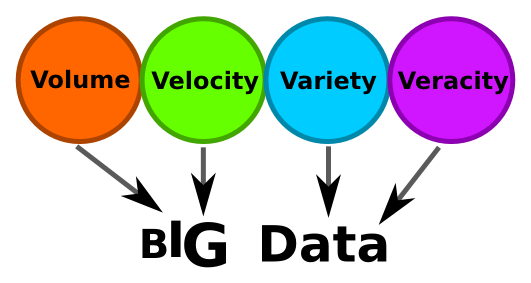

Big Data an der FAU Erlangen-Nürnberg
Was ist „Big Data“ überhaupt?
Big Data ist ein Begriff, der in den letzten Jahren immer häufiger auftaucht und der leider sehr unscharf definiert ist. Natürlich suggeriert das „Big“, dass es sich um viele Daten handelt, was sicher auch richtig ist. Aber es spielen noch ein paar mehr Dinge eine Rolle, wie in folgender Grafik zu sehen ist.

Tipp: Fahre mit der Maus über einen der Kreise
Tipp: Fahre mit der Maus über einen der Kreise